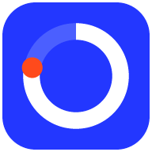

Mi SemanaCondiciones de uso
Última actualización: 26 de octubre de 2026
Al usar Mi Semana aceptas estas condiciones. Son breves a propósito: Mi Semana es una agenda personal gratuita y estas reglas solo buscan que funcione bien para todos.
El servicio
Mi Semana te permite planificar eventos, seguir hábitos y suplementos, y, si creas una cuenta, sincronizarlo todo entre tus dispositivos. Es gratuita y puede cambiar, mejorar o dejar de ofrecerse con el tiempo; si dejara de ofrecerse, se avisará con antelación para que puedas exportar tus datos.
Tu cuenta
- Eres responsable de mantener segura tu contraseña o tu cuenta de Google.
- Una cuenta es personal: no la compartas ni accedas a cuentas ajenas.
- Puedes dejar de usar Mi Semana y pedir que se borre tu cuenta cuando quieras.
Tu contenido
Lo que escribes en Mi Semana es tuyo. Solo se guarda y se procesa para ofrecerte el servicio, como se explica en la Política de privacidad.
Uso aceptable
No uses Mi Semana para actividades ilegales, para intentar acceder a datos de otras personas, ni para sobrecargar o atacar el servicio. Las cuentas que lo hagan pueden suspenderse.
Sin garantías
Mi Semana se ofrece «tal cual». Se hace todo lo posible por que funcione bien y por proteger tus datos, pero no se garantiza que esté siempre disponible ni libre de errores. Te recomendamos exportar una copia de tus datos de vez en cuando desde Ajustes. En la medida en que la ley lo permita, no se asume responsabilidad por pérdidas derivadas del uso de la app.
Cambios
Si estas condiciones cambian, se actualizará la fecha de arriba. Seguir usando la app después de un cambio significa que lo aceptas.
Contacto
Para cualquier duda escribe a bedomonti19@gmail.com.